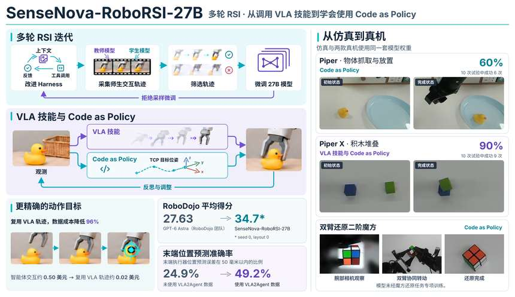
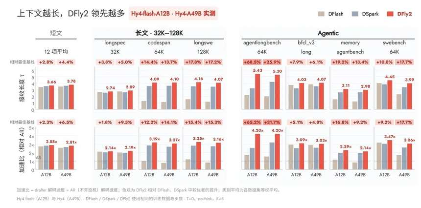
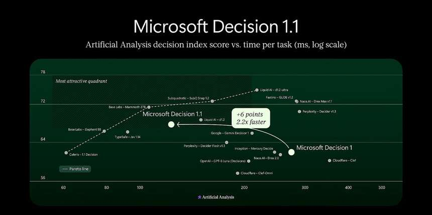
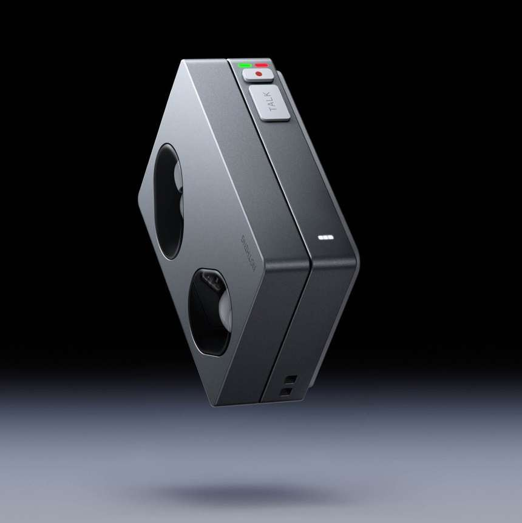
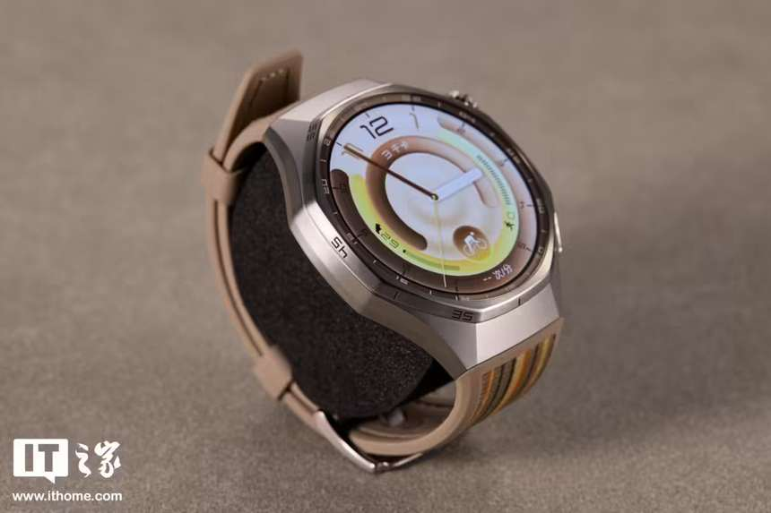
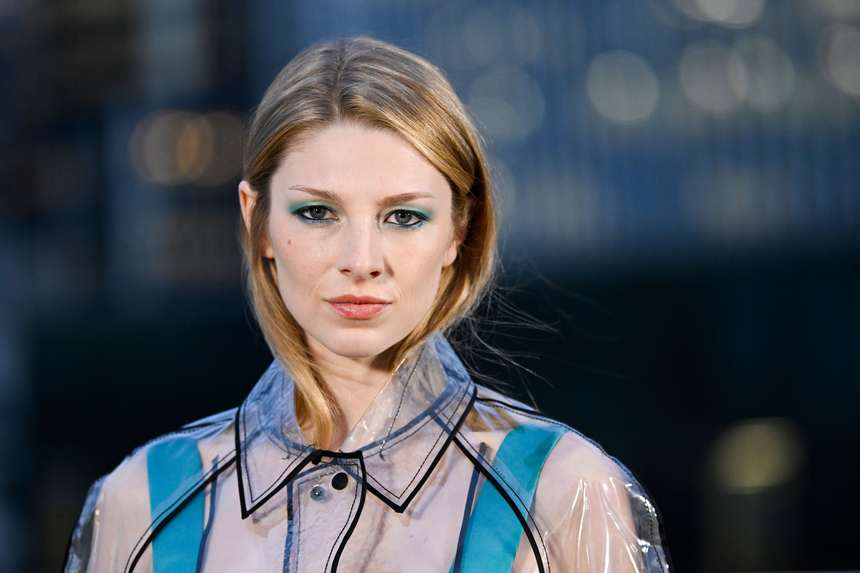
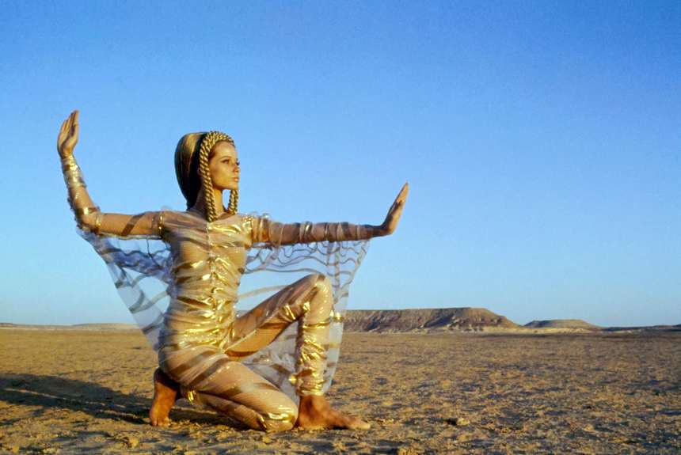
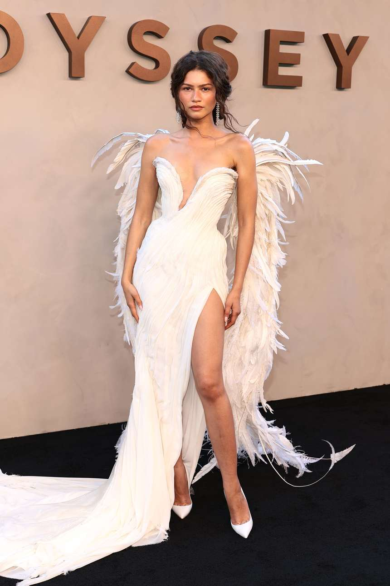
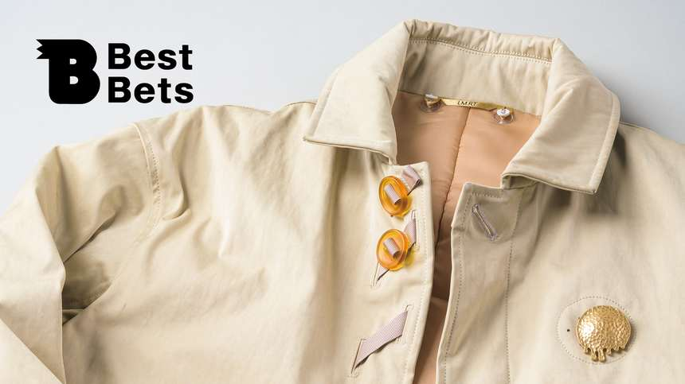

布加勒斯特议会宫：世界上最重建筑的设计归属之争
四维 83 ×1.1 ×1.1 建筑与设计≈ 91
布加勒斯特议会宫是世界最重建筑、罗马尼亚立法机构所在地：84 米高的阶梯状石造立面沿统一大道层层升起。ArchDaily 梳理这座极权时代巨构的设计归属争议——建筑师之名的归属至今各执一词。
💡 点评：「世界最重建筑」的头衔背后是更重的历史：当建筑本身成为权力的纪念碑，署名权之争就永远不只是版权问题——谁设计了它，和谁该为它负责，是同一个问题的两面。
ArchDaily编者按：本份为每日两报新一期晚报，覆盖当天 10:45 ～ 18:00。只取 WB 侧 25 个订阅源 + Tier 0 四家单独检索 + GitHub 当日热榜，全页最高分是今日精选：布加勒斯特议会宫——世界最重建筑的设计归属之争（91）。Tier 0 四家本期窗口内均无新节点：Apple 无产品与政策新动静；Sony 仅翻新版 PS5 Pro 上架（窗口前、非重大）；DSH 仅运营主体工商变更；国内个人助手今日仅媒体跟进，无新官方节点。开源章空章：当日热榜 16 仓与今晨午报完全同榜、近 3 天全已报，窗口内无实质发版。促销新标准（v2.5 §4-3）：命中促销/导购 6 条（山灵 EC Smart 898 元、QCY Ti 259 元、联想 thinkplus USB4 线 149 元、米物移动电源 139 元、惠普显示器 499 元、阿里云教师权益）−10 不乘系数后低于 70，丢弃不上页。出卡口径（评分标准 §3）：每主题前 3 名 + 全部 ≥84 出卡；锚点沿用 t-<主题>/c-<主题>-<序号> 新命名。
Tier 0 其余三家：Apple（窗口内无产品与政策新节点）；Sony（仅翻新版 PS5 Pro 849 美元上架秒售罄，发布于窗口前且非重大产品进展）；DSH（仅运营主体工商变更，非 Harness 本体更新）；国内个人助手（小豆公测为 11-24 节点已报、今日仅媒体实测跟进；千问 Go! 代打电话 11-25 已报；灵光 1 亿激励计划经核为 4 月旧文重收录）。
布加勒斯特议会宫是世界最重建筑、罗马尼亚立法机构所在地：84 米高的阶梯状石造立面沿统一大道层层升起。ArchDaily 梳理这座极权时代巨构的设计归属争议——建筑师之名的归属至今各执一词。

商汤发布并开源机器人操作视觉语言模型 SenseNova-RoboRSI-27B 正式版：能自主判断何时调用 VLA、何时用代码直接控制机械臂，RoboDojo 最新版评测平均 34.7 分（Preview 版 10.0 分），以 27B 体量超越 GPT-6 Astra 测试成绩。

腾讯混元开源新一代草稿模型 DFly2：不替换模型本体，作为加速组件在权重与输出不变的前提下让 Hy4 flash 吐字提速，平均加速比较 DSpark 高约 12%–30%，单项最高 4.2 倍，权重与训练代码同步开源。

纳德拉回应微软自研 AI 与对手的代差：落后 3~6 个月没关系，「量大管饱」才是硬道理——微软将以规模与全栈布局对冲模型代差。
三星电子将在 ISSCC 2027 展示 5XX 层超高堆叠 3D NAND：延续晶圆键合工艺，TLC 模式面密度 42 Gb/mm²、写入吞吐 290MB/s；Solidigm 也将同台展示 240 层 PLC NAND。

Nothing 公布首款原生 AI 设备 Ear (note) 耳机外观，12 月 8 日发布：定位 AI 记录工具，可对对话、通话、会议与即兴想法转写摘要，保留通话按键并新增录音按键，充电盒采用等高线灵感透明设计。

华为 WATCH GT 6 系列随 HarmonyOS 7.0.0.108 SP8 版本推送，更新日志新增「高血糖风险评估」功能下放，同时支持微信来电接听、耳机与手表配对同步等。

Vogue Taiwan 逐套回顾 Hunter Schafer 在《银翼杀手 2099》宣传期的全部首映造型：从 Prada 到 Celine，未来主义设计语汇、建筑感轮廓与高级订制交替登场。

定义一个时代的百变超模 Veruschka 逝世，享寿 87 岁：从德国女伯爵蜕变为超模与艺术家，深受 Richard Avedon 与 Diana Vreeland 青睐，一生以充满热情与创造力的姿态探索美、时尚与自我身份认同。

Vogue 公布 2026 年度最佳着装：Zendaya 与造型师 Law Roach 再度定义好莱坞红毯——从 Givenchy 珍稀古董高订到巴黎新发表的 Schiaparelli，电影宣传成为一场值得期待的时尚大秀。

布加勒斯特议会宫是世界最重建筑、罗马尼亚立法机构所在地：84 米高的阶梯状石造立面沿统一大道层层升起。ArchDaily 梳理这座极权时代巨构的设计归属争议——建筑师之名的归属至今各执一词。
Rockstar 玩法总监透露《GTA 6》为每种物品交互制作了 3 套动画：双手空闲、右手空闲、左手空闲各一套，蹲伏状态还重复整套工序；玩家可以一手拿食物、一手拿枪械。
开发者发起 PlayMyPS5 项目：把个人 PS5 挂上互联网，全球玩家排队远程游玩《GTA6》，每人 5 分钟、20 秒确认接力，无需下载付费注册，等待时可观战聊天。
NASA Earth Observatory 卫星视角聚焦新西兰 Resolution Island：这片原生育类庇护所长期以「无捕食者」为愿景，但会游泳的白鼬一次次游过海峡登岛，保育与入侵的拉锯仍在继续。

BRUTUS 介绍 LM.RT 新作大衣：以希腊神话伊卡洛斯的「太阳胸针」点睛，1950 年代经典版型为底，表料采用小松マテーレ社的高机能防雨针织面料。
GitHub 当日热榜 16 仓与今晨午报完全同榜、近 3 天全已报，窗口内无实质发版，开源章空章。